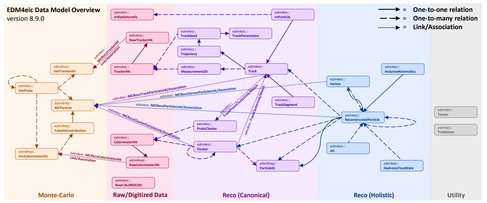
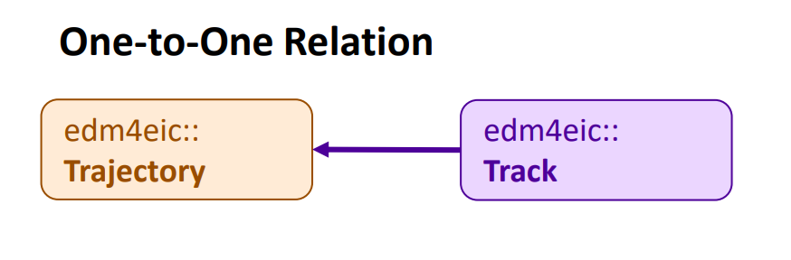
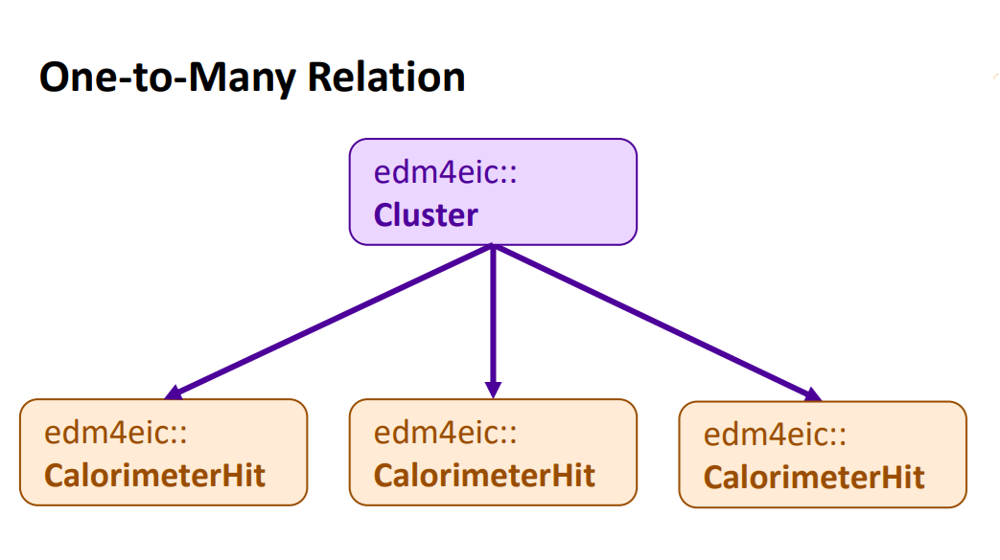
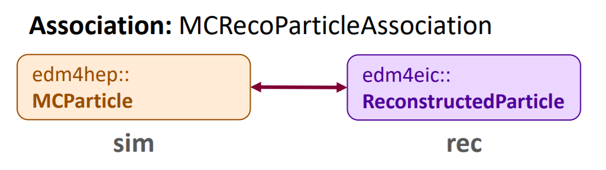
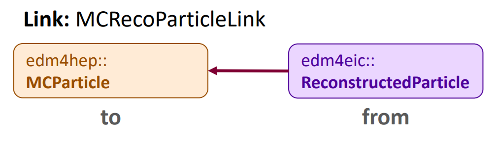

Using PODIO to Work With Our Data Model
Last updated on 2026-07-11 | Edit this page
Overview
Questions
- What is our data model?
- What is PODIO?
- How do I interface with our data model?
Objectives
- Understand relationship between the data model and PODIO
- Become familiar with PODIO concepts and synatx
The EDM4eic Data Model
A data model is how we represent our data in our software. In other words, a standardized set of data structures that we use to pass information between different parts of our software stack (DD4hep, EICrecon, etc.) and between different algorithms in those parts.

Our data model is EDM4eic (Event Data Model for EIC), and is summarized in the above figure. Each box corresponds to a data structure, and the arrows correspond to connections between these structures. The entire model is defined in a single YAML file, edm4eic.yaml, which we’ll break down in detail below.
Exercise
Take a moment to scan the figure, paying attention to the names of
structures. Then pick a structure and find it in the YAML file mentioned
above: notice how the arrows correspond to the fields labeled
OneToOneRelations or OneToManyRelations.
For example, edm4eic::Cluster has one-to-many relations
to edm4eic::CalorimeterHit (the hits combined to form the
cluster), to other edm4eic::Clusters, and to
edm4hep::ParticleID. Each of these corresponds to an arrow
leaving the cluster box in the figure.
A few things comments before we move on:
- Using a standardized set of structures helps keep our software modular, meaning we can easily swap out parts, since all our data adheres to standardized interfaces;
- The data model does not say anything about input/output formats: we write our data using ROOT, but we could also write it in other formats like HDF5;
- And we want our model to be predictable and intuitive: accessing the energy of a calorimeter cluster should be identical to accessing the energy of a particle.
Note
We also utilize the EDM4hep data model in our software. This is a data model developed by the Key4hep project, which is developing common software to support the FCC, ILC/CLIC, Muon Collider, and more. Just like with our data model, the EDM4hep model is also defined in a single YAML file, edm4hep.yaml.
An Introduction to PODIO
So then what’s PODIO? PODIO (Plain-Old-Data Input/Output) is a toolkit for generating and managing a data model like EDM4eic. It reads in a YAML file like edm4eic.yaml and generates all the C++ and Python code needed to read, write, and interface with the structures defined in there.
Classes
Let’s look at one of these structures:
YAML
edm4eic::Track:
Description: "Track information at the vertex"
Author: "S. Joosten, J. Osborn"
Members:
- int32_t type // Flag that defines the type of track
- edm4hep::Vector3f position // Track 3-position at the vertex
- edm4hep::Vector3f momentum // Track 3-momentum at the vertex [GeV]
- edm4eic::Cov6f positionMomentumCovariance // Covariance matrix in basis [x,y,z,px,py,pz]
- float time // Track time at the vertex [ns]
- float timeError // Error on the track vertex time
- float charge // Particle charge
- float chi2 // Total chi2
- uint32_t ndf // Number of degrees of freedom
- int32_t pdg // PDG particle ID hypothesis
OneToOneRelations:
- edm4eic::Trajectory trajectory // Trajectory of this track
OneToManyRelations:
- edm4eic::Measurement2D measurements // Measurements that were used for this track
- edm4eic::Track tracks // Tracks (segments) that have been
// combined to create this trackThis is an example of a class. At the top of the definition,
we see some basic info like the name of the structure, a brief
description, and the authors. Following this, we see a block labeled
Members. These are your basic class members. Suppose we
have an edm4eic::Track named track, how would
we access its members?
PYTHON
# getting data members
trk_time = track.getTime()
trk_ndf = track.getNdf()
# setting data members
track.setCharge(-1.0)
track.setPDG(11)Or in C++:
CPP
// getting data members
float trk_time = track.getTime();
uint32_t trk_ndf = track.getNdf();
// setting data members
track.setCharge(-1.0);
track.setPDG(11);This already highlights of the big advantages of using PODIO to work with our data: the interface is almost identical between C++ and Python. We’ll see where they diverge in later sections.
Wait! But how would I know that the accessors start with
get or set? 1. First, look at the top of the
YAML file: you’ll notice under options that getSyntax is
set to true. This means that the accessor functions for
class members will always start with
get/set, letting you infer what the
relevant functions are from the YAML. 2. You can also look at the
generated classes on our EDM4eic doxygen page. Or while
you’re in eic-shell, you can look at them in the path
/opt/local/include/edm4eic.
Exercise
Follow the link to the
doxygen page, and locate the header file for
edm4eic::Track. Once you found it, give it a quick scan.
Then in eic-shell, find the same header file and compare it to the
online version.
On the doxygen page, the header is listed under
edm4eic/Track.h. In eic-shell, the same file is at
/opt/local/include/edm4eic/Track.h — you can view it with,
e.g., less /opt/local/include/edm4eic/Track.h. You’ll find
the same getTime(), getNdf(), etc. accessors
that the YAML file implies.
Collections and Frames
For reading in/writing out classes, they’ll need to be placed in a
collection. Collections can be thought of as almost (but not
quite!) a c++ std::vector or Python list of objects.
Iterating through their contents looks like you’d expect for either of
those containers:
PYTHON
tracks = frame.get("CentralCKFTracks")
for track in tracks:
chi2_ndf = track.getChi2() / track.getNdf()Or:
CPP
auto& tracks = frame.get<edm4eic::TrackCollection>("CentralCKFTracks");
for (const auto& track : tracks) {
chi2_ndf = track.getChi2() / track.getNdf();
}The frame in the above snippets is a Frame,
which holds and organizes several collections. We’ll see frames and
collections in action in the following episodes. However, a detailed
explanation of their usage is outside the scope of this tutorial.
Warning
The big thing to note here is that collections are read-only! This means that you can’t modify an object you are reading from a collection!
Components
Notice that the position and momentum of the track are stored as an
edm4hep::Vector3f. This is an example of a
component. Let’s look at the definition:
YAML
edm4hep::Vector3f:
Members:
- float x
- float y
- float z
ExtraCode:
includes: "#include <cstddef>"
declaration: |
constexpr Vector3f() : x(0),y(0),z(0) {}
constexpr Vector3f(float xx, float yy, float zz) : x(xx),y(yy),z(zz) {}
constexpr Vector3f(const float* v) : x(v[0]),y(v[1]),z(v[2]) {}
constexpr bool operator==(const Vector3f& v) const { return (x==v.x&&y==v.y&&z==v.z) ; }
constexpr bool operator!=(const Vector3f& v) const { return !(*this == v) ; }
constexpr float operator[](unsigned i) const {
static_assert(
(offsetof(Vector3f,x)+sizeof(Vector3f::x) == offsetof(Vector3f,y)) &&
(offsetof(Vector3f,y)+sizeof(Vector3f::y) == offsetof(Vector3f,z)),
"operator[] requires no padding");
return *( &x + i ) ;
}It has 3 data members and some extra code, which just defines some
handy functions. If you find this in edm4hep.yaml,
then you’ll notice it’s defined under a block labeled
components. Notice that edm4eic::Track is
defined under a block labeled classes.
Components are just simple structs (in the C++ sense).
This means that component accessors are not prefixed by
get/set. For example:
Or:
CPP
#include <cmath>
float px = track.getMomentum().x;
float py = track.getMomentum().y;
float pt = std::hypot(px, py);Also note that components can’t be stored in a collection and so
can’t be written out except as part of a class such as
edm4eic::Track.
Vector Members
Let’s look at the definition of a calorimeter cluster:
YAML
edm4eic::Cluster:
Description: "EIC hit cluster, reworked to more closely resemble EDM4hep"
Author: "W. Armstrong, S. Joosten, C.Peng"
Members:
- int32_t type // Flag-word that defines the
// type of the cluster
- float energy // Reconstructed energy of the
// cluster [GeV].
- float energyError // Error on the cluster energy [GeV]
- float time // [ns]
- float timeError // Error on the cluster time
- uint32_t nhits // Number of hits in the cluster.
- edm4hep::Vector3f position // Global position of the cluster [mm].
- edm4eic::Cov3f positionError // Covariance matrix of the
// position (6 Parameters).
- float radius // Cluster radius [mm].
- float dispersion // Cluster dispersion [mm].
- std::array<float, 3> principalAxesLengthsXYZ // Lengths along the cluster's principal
// axes [mm], sorted in descending order
// (equivalent to sqrt of eigenvalues of the
// position covariance). For an XY planar
// detector one can expect this to be
// [sigma_max, sigma_min, 0].
- std::array<float, 2> principalAxesLengthsThetaPhi // Lengths along the cluster's principal
// axes [rad], sorted in descending order.
- float intrinsicTheta // Intrinsic cluster propagation direction
// polar angle [rad].
- float intrinsicPhi // Intrinsic cluster propagation direction
// azimuthal angle [rad]. For an XY planar
// detector one can expect this to be the
// tilt of "sigma_max" axis.
- edm4eic::Cov2f intrinsicDirectionError // Error on the intrinsic cluster
// propagation direction
VectorMembers:
- float shapeParameters // [DEPRECATED] use radius, dispersion,
// principalAxesLengthsXYZ/ThetaPhi instead.
- float hitContributions // Energy contributions of the hits. Runs parallel to ::hits()
- float subdetectorEnergies // Energies observed in each subdetector used for this cluster.
OneToManyRelations:
- edm4eic::Cluster clusters // Clusters that have been combined to form this cluster
- edm4eic::CalorimeterHit hits // Hits that have been combined to form this cluster
- edm4hep::ParticleID particleIDs // Particle IDs sorted by likelihoodYou’ll see a block labeled VectorMembers. These are just
std::vectors of data. For example,
hitContributions holds the weighted energy of the
calorimeter cells (a.k.a hits) that make up a given
cluster.
The accessors are the same as for normal members, except they’ll
return a std::vector (C++) or List (Python).
Suppose we have an edm4eic::Cluster named
cluster:
PYTHON
total_energy = 0.0
for weighted_energy in cluster.getHitContributions():
total_energy += weighted_energyOr:
Relations
Now, let’s consider the OneToOneRelations and
OneToManyRelations blocks. These are examples of
relations, references to objects in other collections. We use
these to define a direct, necessary relationship between an
object and one other object (one-to-one) or many other objects
(one-to-many).

The above figure schematically illustrates a one-to-one relation. A
track should correspond to a charged particle with a defined
momentum and charge. It’s computed from a trajectory, a path
fit to a set of points from our trackers. This relationship is expressed
in the one-to-one relation from our edm4eic::Track to an
edm4eic::Trajectory.
Retrieving the object from a relation is done the same way you would get a value from a member:
Or:
C++
auto trajectory = track.getTrajectory();
uint32_t n_points_used = trajectory.getNMeasurements();
Then the above figure schematically illustrates a one-to-many
relation. For example, a calorimeter cluster is group of calorimeter
cells (hits). The cells that make up a given cluster are recorded in its
one-to-many relation to edm4eic::CalorimeterHits.
Objects referred to in a one-to-many relation are retrieved like you’d expect:
Or:
When you call getHits() in the above snippets, it
returns a List (Python) or std::vector (C++)
of edm4eic::CalorimeterHits just like with vector
members.
Associations/Links
In contrast to relations, which express a direct connection between two or more objects, associations express an indirect connection which might or might not exist. For example, the connection between a monte carlo particle and its reconstructed counterpart:

This is defined in edm4eic.yaml as:
YAML
edm4eic::MCRecoParticleAssociation:
Description: "Used to keep track of the correspondence between MC and reconstructed particles"
Author: "S. Joosten"
Members:
- float weight // weight of this association
OneToOneRelations:
- edm4eic::ReconstructedParticle rec // reference to the reconstructed particle
- edm4hep::MCParticle sim // reference to the Monte-Carlo particle
ExtraCode:
includes: "
#include <edm4eic/ReconstructedParticle.h>\n
#include <edm4hep/MCParticle.h>\n
"
declaration: "
[[deprecated(\"use getSim().getObjectID().index instead\")]]
int getSimID() const { return getSim().getObjectID().index; }\n
[[deprecated(\"use getRec().getObjectID().index instead\")]]
int getRecID() const { return getRec().getObjectID().index; }\n
"The weight here is nominally a measure of the goodness
of the correspondence between the reconstructed and MC particles, and
the rec and sim fields store the references to
the corresponding particles. Let’s assume we have an
edm4eic::MCRecoParticleAssociation called
assoc. Accessing its members is exactly like you’d
expect:
PYTHON
rec_par = assoc.getRec()
sim_par = assoc.getSim()
weight = assoc.getWeight()
e_frac = (sim_par.getEnergy() - rec_par.getEnergy()) / sim_par.getEnergy()Or:
CPP
auto rec_par = assoc.getRec();
auto sim_par = assoc.getSim();
float weight = assoc.getWeight();
float e_frac = (sim_par.getEnergy() - rec_par.getEnergy()) / sim_par.getEnergy();Now let’s consider the equivalent link:
YAML
edm4eic::MCRecoParticleLink:
Description: "Used to keep track of the correspondence between MC and reconstructed particles"
Author: "S. Joosten"
From: edm4eic::ReconstructedParticle
To: edm4hep::MCParticleThere’s a lot less! Links are defined in their own specific
block (labeled links), and only need you to specify which
types they’re connecting (edm4eic::ReconstructedParticle
and edm4hep::MCParticle in this case).

They provide the same functionality as association, but there are a few key differences:
- Links always have the same fields:
from,to, andweight(which is implied); - And they have directionality (illustrated in the above figure).
Point 1 means the accessors will always be the same for any link. The link equivalents of the above snippets are:
PYTHON
rec_par = link.getFrom()
sim_par = link.getTo()
weight = link.getWeight()
e_frac = (sim_par.getEnergy() - rec_par.getEnergy()) / sim_par.getEnergy()And:
CPP
auto rec_par = link.getFrom();
auto sim_par = link.getTo();
float weight = link.getWeight();
float e_frac = (sim_par.getEnergy() - rec_par.getEnergy()) / sim_par.getEnergy();The directionality comes into play with the
podio::LinkNavigator, which enables extremely fast lookup
of linked objects. This is, however, outside the scope of this
tutorial.
Warning
We’re in the process of deprecating of associations in favor of links (EDM4hep has already done this). Currently we write out both associations and their equivalent links where needed to not break analysis code. However, we will in the near future remove associations and write out only links
User vs. Storage Layer
Lastly, try opening the file we downloaded during Setup with a ROOT TBrowser:
BASH
$ root --web-display=off lAger3.6.1-1.0_jpsi_10x130_hiAcc_run1.0009.eicrecon.edm4eic.root
root [0] new TBrowser()Open the tree labeled events and you’ll see hundreds of
branches! Find the branch labeled CentralCKFTracks, open it
and click on a few leaves. This is how PODIO data is organized in
memory, as a big array of structs holding the values in the leaves. This
is referred to as the POD (or Data) Layer.
As noted in the last section, the Analysis Tutorial
illustrates how to work directly with the POD Layer using a ROOT
TTreeReader. The syntax illustrated above is working with
what’s called the User Layer, a think layer of interfaces to
make working with the data easy. A third layer, the Object
Layer, interfaces between the POD and User Layers.
There are clear benefits to working with the User Layer over the POD Layer:
- Significantly less boilerplate code to write,
- Easy, intuitive syntax to deal with relations, associations, and vector members; and
- The User Layer synatx will remain constant, but how the POD Layer is organized may not.
The first two points will be illustrated very clearly in the following episodes. However, there may be cases where working directly with the POD Layer is actually preferable. For example:
- You may want to histogram just one or two members directly, or
- You’re working with a ML pipeline where you’ll need to load the data as a dataframe.
Which analysis method is ultimately up to you: our goal is to support as many methods as possible, and, between the POD Layer and the User Layer, PODIO gives us the tools to do that.
References
- EDM4eic
- EDM4eic YAML File
- EDM4hep
- Key4hep Project
- EDM4hep YAML File
- PODIO
- EDM4eic Doxygen
- PODIO Documentation
- Link Navigator Documentation
- Analysis Tutorial
- A data model is how represent our data in software
- PODIO is a toolkit to generate and interface with data models like EDM4eic
- Classes have their accessors prefixed by get/set, components don’t
- Relations are references to objects in other collections
- Associations/links define indirect connections between objects